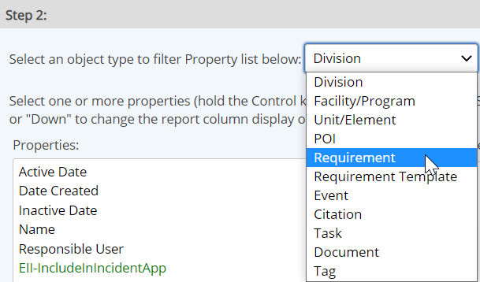
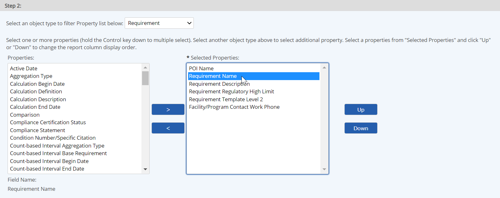

Once you have selected the objects that you want to report on, you can add object properties to the output. You may include properties of the parent objects as well as the specific objects selected for inclusion in the report. For example, if the objects you want to report on are POIs, you can include the name of the Unit to which they belong by selecting Unit from the object type list, then Name from the properties list.
To choose the properties to report on:
Select the object type from the list.

The available properties for the object type are displayed in the Properties box.
Select the properties whose values you want to include in the report from the Properties box. Use the > button to move them to the Selected Properties list. Use Ctrl-click for multiple selection.
Properties that appear at the bottom of the list in green are custom fields.

Depending on the type of report, there may be certain default properties that are required (such as Data Value for a Data Report). These properties will appear by default and cannot be removed.
To re-order properties: Select a property or multiple properties and click the Up or Down button.
To sort by a property: Select the property then check Sort. Choose Ascending or Descending. Properties will be displayed in red if they are used for sorting. When sorting on more than one property, the sort order is the same as the order of the properties in the Selected Properties box: the first property in the list is the first sort criteria, etc.
To group by a property: Select the property and check Group. Choose Header or Label for the grouping type.
Expand Value History: Select this option to show the value history for selected parameters and variables.